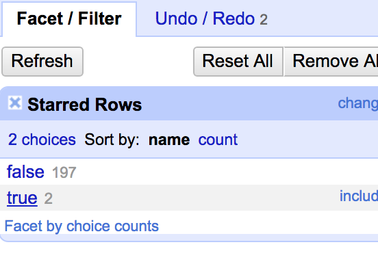
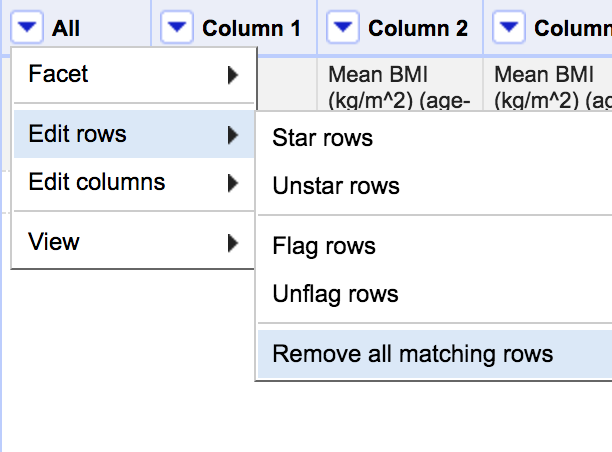
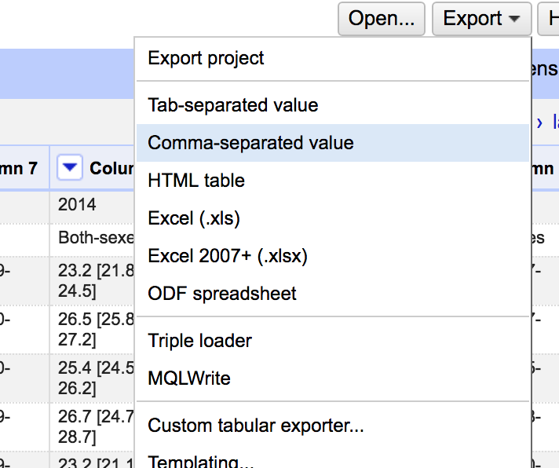

Working with Data: OpenRefine
The Data 'Shop
Learning Objectives
- Create projects in OpenRefine.
- Delete unnecessary columns.
- Restructure spreadsheet into tidy data format.
About OpenRefine
formerly Google Refine
OpenRefine is a powerful tool for working with messy data: cleaning it, transforming it from one format into another, and extending it with web services and external data. Working as a standalone open source desktop application, use OpenRefine for data cleanup and transformation to other formats - i.e., data wrangling. It is similar to spreadsheet applications; however, it behaves more like a database.
Creating projects
You create a "project" or a file to save the actions you took within your dataset. To create a project, open OpenRefine. The interface will appear as a tab in your browser. You can also type in 127.0.0.1:3333 in the address bar for OpenRefine.
Start by going to Create Project and upload the countries-BMI.csv file in the data folder. You will be taken to a preview of your file.

Uncheck the box that says it will "parse next [1] line(s) as column headers. Click Create Project in the top right corner to begin.
Deleting Rows
In this dataset, we need to delete the rows saying Mean BMI (kg/m^2) (age-standardized estimate) and 18+ years because they don't actually represent an instance of data within the dataset. To remove a row, click the star next to the beginning of the rows you want to delete. Then choose the drop-down arrow by All in the top left. Then select Facet -> Facet by star.

On the left will appear the facets showing which rows were and weren't starred. Select true to limit your data to the rows that were starred.

Now, to delete those rows, select All->Edit rows->Remove all matching rows.

Hit the X in the facet box on the left to clear the filter and display the remaining rows.
JSON Scripts in OpenRefine
OpenRefine harnesses the power of scripts by providing the option to Extract Operation History. By going to the Undo/Redo tab and clicking Extract, it will display the operation history as a JSON that can be applied to future projects, saving you the time of redoing all of the steps manually.

Other Features of OpenRefine
There are many more features in OpenRefine that we won't be using but are very helpful in cleaning data.
- Facets: Facets let you see unique values within a column. If there are errors to be fixed or items you'd like to replace, you can click on that unique value and update it. Those changes will then be made wherever that value is present within that column.
- Clusters: Clustering allows you to spot similarities and clean dirty data. For example, key collision and nearest neighbor clusters would correct slight differences or misspellings, bringing variations together to match one another based on your specifications. For example, a cell with the typo new yorkk would be corrected to match with the other cells that say New York.
- Quick Commands: There are a number of quick commands allowing you to do things like remove various whitespaces, split/merge columns, and change capitalization in one click.
- Action History: In addition to the JSON file, your OpenRefine project includes the entire history of the actions you have taken, and you are able to Undo or Redo any of those actions at any time.
When working with researchers, I often load their data to OpenRefine to clean it and to create a data dictionary using the list of text facets for each column. OpenRefine is a powerful tool with great capabilities. Actually, our entire upcoming activity in R can also be accomplished in OpenRefine.
Exporting the Dataset
Our last activity will be to export the dataset.
Go to Export and select Comma-separated value.

This will download a CSV file countries-BMI-csv to your computer. Open the downloaded file and delete the first row. Then go to File->Save As. Save the file as countries-BMI-1.0.csv back in your data folder.
The Data 'Shop,
2017. License. Contributing.
Questions? Feedback?
Please file
an issue on GitHub.
On
Twitter: @123POW